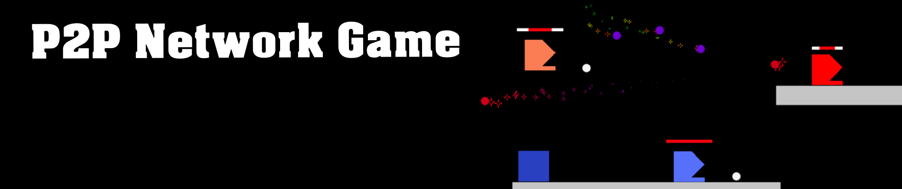
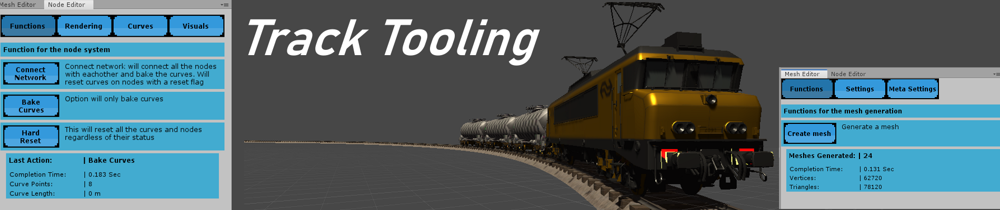
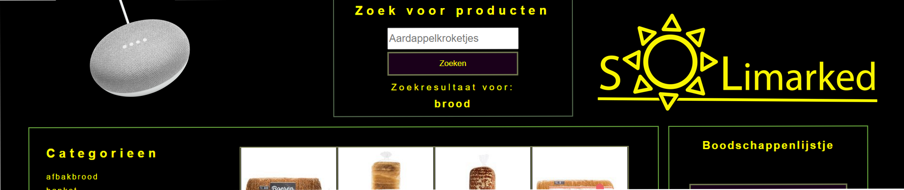
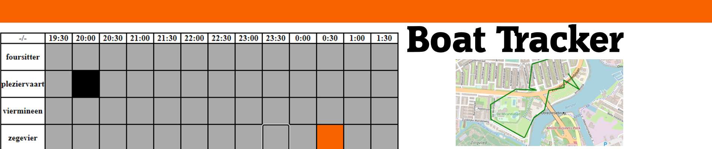

Games
This is the place where you can find my games/projects, which I created on my own in the last couple of years.
- P2P Network game made from scratch in unity
- Tracktool was a tool I created to make it easy to generate meshes with a custom editor
- Solimarked is a website/IOT product created in and for the corona pandemic.
- TraffiX was a game I created in the summer holiday.
- IOT Boat Tracker was a IOT product to track rowing boats.
- Roof Runner was the first ever game I created as a school project.
- Crystall was also a school project and was made to be demo for a game concept.

P2P Game
I made this game in unity to learn more about multiplayer games and how they are created.
To do this I started from scratch with the UdpClient of the .net framework.
The purpose of this game was to create a P2P network and to test out the networking code.
Download Build
Git Repository

Tracktool
This tool was made for generating meshes on bezier curves.
The tool grew into a track tool which allowed trains to drive on it.
The project was also created to make custom editors within unity and learn how they work.
Git Repository

Solimarked
Solimarked is a website/IOT product created for the corona pandemic.
The aim of this product was to create a way to help people with their groceries.
Volunteers on the website could help with orders send by the people who are vulnerable in these times.
The webiste was created to help the visually impaired people get products,
this is why the website has a high contrast theme.
The IOT product was meant to count people within a store and send this info to people at home,
so they could make a decision to based on the color given by their IOT lamp.
The google home mini was also included to help with people that are completely blind.
Their orders could be interpreted by the google mini and send to our server for processing.
Git Repository
TraffiX
TraffiX is a game where you have to operate the traffic lights to safely guide traffic to their destination.
The only control you have are the traffic lights.
With these lights you have to manage the traffic flow by ordering the light to go green or red.
DOWNLOAD GAME HERE!

Boat Tracker
Boat tracker is a solo project I created to keep track of rowing boats.
The boat would contain a arduino with a gps module and would send this information to the server.
The website would show the current position of the boat and the route the boat took on the given time.
Arduino Git
Server Git
Roof Runner
Roof Runner is an endless runner where you have to dodge obstacles on rooftops.
In this sidescrolling adventure you will have to run from the police as a robber.
The police force will use weapons to take you down, with the help of ground units and a backup helicopter.
You will have to fight your way out to freedom with your only weapon available, a sock boomerang
/!\ if you get stuck in the level you might have to duck in order to dodge certain obstacles. /!\
DOWNLOAD GAME HERE!
Crystall
In the game Crystall you have to escape as a robot from the evil robots.
You will be doing this by solving puzzles involving lightbeams and gems with different abilities.
You need to use the gems in order to overcome obstacles and defeat enemy robots and turrets.
/!\ This game is not finished and is more a proof of concept. /!\
DOWNLOAD GAME HERE!